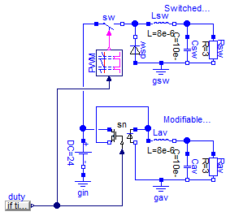
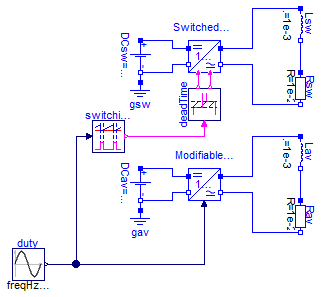
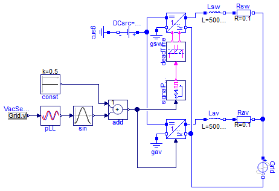
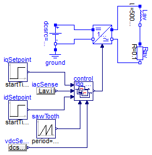
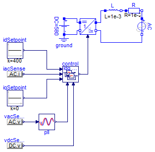
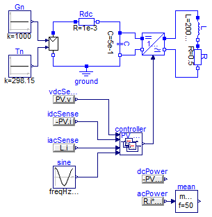
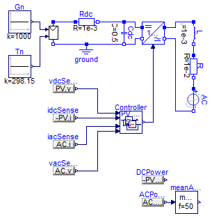
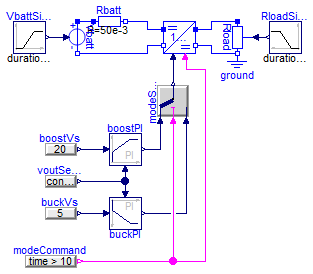

More complete application examples
Information
Extends from Modelica.Icons.ExamplesPackage (Icon for packages containing runnable examples).
Package Content
| Name |
Description |
 BuckOpen BuckOpen
|
Ideal open-loop buck converter |
| Inverter1phOpen
|
Stand-alone 1-phase open-loop inverter with constant DC source |
| Inverter1phOpenSynch
|
Grid-tied 1-phase open-loop inverter with constant DC source |
| Inverter1phClosed
|
Stand-alone 1-phase closed-loop inverter with constant DC source |
| Inverter1phClosedSynch
|
Grid-tied 1-phase closed-loop inverter with constant DC source |
| PVInverter1ph
|
Stand-alone 1-phase closed-loop inverter with PV source |
| PVInverter1phSynch
|
Grid-tied 1-phase closed-loop inverter with PV source |
| USBBatteryConverter
|
Bidirectional converter for USB battery interface |
Ideal open-loop buck converter

Information
This example compares two implementations of a buck
DC-DC converter. The switched version is built using
mostly blocks
from Modelica's
electrical library but also includes
the SwitchingPWM
model. The averaged version is built around a
replaceable instance of the average switch model for CCM
(continuous conduction mode) and DCM (discontinuous
conduction mode) considering no losses.
This example showcases how components from PVSystems can
be mixed with components from the Modelica Standard
Library to build systems that might be of
interest. Additionally, it aims validating the average
switch model performance by comparison with the more
accurate/detailed switched model.
This is still an open-loop system. A duty cycle value is
fed to the SwitchingPWM block to drive the ideal closing
switch or to the averaged switch network model. The duty
cycle value begins at 0.1 and changes to 0.6 in the
middle of the simulation. The effect of this change can
be observed by plotting the output voltages:
The output voltage for both implementations is not
exactly the same but it can be seen that the averaged
model provides a very decent approximation. This is the
case because both the switching and the averaged
implementations are neglecting losses and because they
are both correctly modelling CCM and DCM modes. The
converter is operating in DCM in the first interval and
in CCM in the second:
An interesting exercise to complete this example would
be to build a controller to close the loop and study the
system's behaviour.
Extends from Modelica.Icons.Example (Icon for runnable examples).
Parameters
| Type | Name | Default | Description |
|---|
| CCM_DCM1 | sn | redeclare Electrical.CCM_DCM... | |
Modelica definition
model BuckOpen
extends Modelica.Icons.Example;
Modelica.Electrical.Analog.Sources.ConstantVoltage DC(V=24);
Modelica.Electrical.Analog.Basic.Resistor Rav(R=3);
Modelica.Electrical.Analog.Basic.Inductor Lav(L=8e-6);
Modelica.Electrical.Analog.Basic.Capacitor Cav(C=10e-6);
replaceable Electrical.CCM_DCM1 sn(Le=Lav.L, fs=PWM.fs)
constrainedby
PVSystems.Electrical.Interfaces.SwitchNetworkInterface;
Modelica.Electrical.Analog.Ideal.IdealClosingSwitch sw;
Modelica.Electrical.Analog.Ideal.IdealDiode dsw;
Control.SwitchingPWM PWM(fs=1e5);
Modelica.Electrical.Analog.Basic.Resistor Rsw(R=3);
Modelica.Electrical.Analog.Basic.Inductor Lsw(L=8e-6);
Modelica.Electrical.Analog.Basic.Capacitor Csw(C=10e-6);
Modelica.Electrical.Analog.Basic.Ground gin;
Modelica.Electrical.Analog.Basic.Ground gsw;
Modelica.Electrical.Analog.Basic.Ground gav;
Modelica.Blocks.Sources.RealExpression duty(y=
if time < 5e-4
then 0.1
else 0.6);
equation
connect(Cav.n, gav.p);
connect(Rav.n, gav.p);
connect(Lav.n, Rav.p);
connect(Cav.p, Lav.n);
connect(DC.p, sn.p1);
connect(sn.p2, Lav.p);
connect(sn.n2, gav.p);
connect(sw.p, DC.p);
connect(sw.n, dsw.n);
connect(Lsw.n, Rsw.p);
connect(Csw.p, Lsw.n);
connect(Lsw.p, dsw.n);
connect(Csw.n, Rsw.n);
connect(dsw.p, gsw.p);
connect(gsw.p, Csw.n);
connect(gin.p, DC.n);
connect(PWM.c1, sw.control);
connect(PWM.vc, sn.d);
connect(sn.n1, Lav.p);
connect(duty.y, sn.d);
end BuckOpen;
Stand-alone 1-phase open-loop inverter with constant DC source

Information
This example presents two implementations of an open
loop 1-phase inverter. The function of the inverter is
to convert DC voltage and current into AC voltage and
current. To keep things simple, a constant DC source is
included on the DC side and an RL load is included on
the AC side. Typically, inverters are placed inside a
more complicated setup, which might require MPPT
(Maximum Power Point Tracking) on the DC side when
connected to a PV array and AC synchronization when
connected to a grid on the AC side instead of just a
simple passive load.
Nevertheless, the example still showcases an interesting
application. Upon running the simulation with the
provided values, plotting the resistor voltages yields
the following figure:
The AC is achieved with the inverter topology (called an
H-bridge) as well as with the duty cycle sinusoidal
modulation. Have a look at the duty cycle driving the
SwitchingPWM block and compare it with the voltage drop
in the resistor.
Compare it with the voltage drop in the inductor. The
voltage coming out of the inverter is actually a square
wave and the inductor is providing some crude (but
enough for some applications) filtering. Play around
with the value of the inductor to see how it provides a
better or worse filtering performance (decreasing or
increasing the voltage and current ripple in the
resistor, which in this example is assumed to be the
load being fed). Since this is an open loop
configuration, it will also change the peak value of the
voltage drop in the resistor, as well as its phase.
Importantly, see how the the average model provides a
very good approximation for low frequencies. This kind
of model won't be useful to study ripples and to
evaluate the performance of different PWM modulations
(sinusoidal modulation is being used in this example) or
of different filter configurations, since those are
concerned with the high frequencies in the system. On
the other hand, the average models will be very useful
to study controllers and to perform longer simulations
since the simulation step doesn't need to be so small as
to accurately represent the switching dynamics.
Extends from Modelica.Icons.Example (Icon for runnable examples).
Modelica definition
model Inverter1phOpen
extends Modelica.Icons.Example;
Electrical.Assemblies.HBridgeSwitched
HBsw;
Modelica.Electrical.Analog.Sources.ConstantVoltage DCsw(V=580);
Modelica.Electrical.Analog.Basic.Ground gsw;
Modelica.Electrical.Analog.Basic.Resistor Rsw(R=1e-2);
Modelica.Electrical.Analog.Basic.Inductor Lsw(L=1e-3);
Modelica.Blocks.Sources.Sine duty(
offset=0.5,
freqHz=50,
amplitude=0.05);
PVSystems.Electrical.Assemblies.HBridge HBav;
Modelica.Electrical.Analog.Basic.Resistor Rav(R=1e-2);
Modelica.Electrical.Analog.Basic.Inductor Lav(L=1e-3);
Modelica.Electrical.Analog.Sources.ConstantVoltage DCav(V=580);
Modelica.Electrical.Analog.Basic.Ground gav;
Control.SwitchingPWM switchingPWM(fs=3125);
Control.DeadTime deadTime;
equation
connect(DCsw.n, gsw.p);
connect(HBsw.n1, DCsw.n);
connect(HBsw.p1, DCsw.p);
connect(HBsw.p2, Lsw.p);
connect(HBsw.n2, Rsw.n);
connect(Rsw.p, Lsw.n);
connect(Rav.p, Lav.n);
connect(HBav.p2, Lav.p);
connect(Rav.n, HBav.n2);
connect(HBav.d, duty.y);
connect(DCav.n, gav.p);
connect(DCav.p, HBav.p1);
connect(DCav.n, HBav.n1);
connect(deadTime.c1, HBsw.c1);
connect(deadTime.c2, HBsw.c2);
connect(switchingPWM.c1, deadTime.c);
connect(switchingPWM.vc, duty.y);
end Inverter1phOpen;
Grid-tied 1-phase open-loop inverter with constant DC source

Information
This example goes a step further
than Inverter1phOpen
and includes grid synchronization. Typically this is the condition
for inverters in real-life situations. Both switched and averaged
implementations are presented for comparison purposes and it can be
seen that they both provide very similar results (excluding the fact
that high frequencies are left out in the averaged model).
Since this is still open-loop and there's no in-quadrature
separation, the value of the current can't comfortably be specified
to be of a certain value. Since the RL load has almost equal real
and imaginary parts, the current that is drawn from the inverter has
a power factor different than one.
A key value to pay attention to in this example is the gain that is
placed in the Add block.
It's initially set at 0.5. The value is expressed as 580/580/2 to
highlight the fact that this gain should be normalized to the DC
voltage value. Above that, over-modulation will occur and the output
current of the inverter will become quite ugly. Play around with
this value (using values between 0 and 0.5) to see how the output
current of the inverter changes.
Extends from Modelica.Icons.Example (Icon for runnable examples).
Modelica definition
model Inverter1phOpenSynch
extends Modelica.Icons.Example;
Electrical.Assemblies.HBridgeSwitched
HBsw;
Modelica.Electrical.Analog.Sources.ConstantVoltage DCsw(V=580);
Modelica.Electrical.Analog.Sources.SineVoltage ACsw(freqHz=50, V=480);
Modelica.Electrical.Analog.Basic.Inductor Lsw(L=1e-3);
Control.PLL pLL;
Modelica.Blocks.Math.Cos sin;
Modelica.Blocks.Math.Add add(k2=1, k1=580/580/2);
Modelica.Blocks.Sources.Constant const(k=0.5);
Modelica.Electrical.Analog.Basic.Resistor Rsw(R=1e-2);
PVSystems.Electrical.Assemblies.HBridge HBav;
Modelica.Electrical.Analog.Basic.Inductor Lav(L=1e-3);
Modelica.Electrical.Analog.Basic.Resistor Rav(R=1e-2);
Modelica.Electrical.Analog.Basic.Ground gsw;
Modelica.Blocks.Sources.RealExpression VacSense(y=ACsw.v);
Modelica.Electrical.Analog.Sources.SineVoltage ACav(freqHz=50, V=480);
Modelica.Electrical.Analog.Sources.ConstantVoltage DCav(V=580);
Modelica.Electrical.Analog.Basic.Ground gav;
Control.SwitchingPWM switchingPWM(fs=3125);
Control.DeadTime deadTime;
equation
connect(pLL.theta, sin.u);
connect(const.y, add.u2);
connect(sin.y, add.u1);
connect(VacSense.y, pLL.v);
connect(ACav.p, Rav.n);
connect(Rav.p, Lav.n);
connect(HBav.p2, Lav.p);
connect(HBav.n2, ACav.n);
connect(ACsw.p, Rsw.n);
connect(Rsw.p, Lsw.n);
connect(HBsw.n2, ACsw.n);
connect(HBsw.p2, Lsw.p);
connect(DCav.n, gav.p);
connect(DCsw.n, gsw.p);
connect(DCsw.p, HBsw.p1);
connect(DCsw.n, HBsw.n1);
connect(DCav.n, HBav.n1);
connect(DCav.p, HBav.p1);
connect(add.y, HBav.d);
connect(deadTime.c1, HBsw.c1);
connect(deadTime.c2, HBsw.c2);
connect(switchingPWM.c1, deadTime.c);
connect(switchingPWM.vc, HBav.d);
end Inverter1phOpenSynch;
Stand-alone 1-phase closed-loop inverter with constant DC source

Information
This example explores a closed-loop inverter. No grid is
present, which simplifies things. But, since the
controller is implemented in the synchronous (dq)
reference frame, a synchronization source needs to
exist. This is implemented with the saw tooth generator,
which emulates the output of the PLL.
As can be seen in the following figure, one can now
comfortably specify the setpoint for the output current
of the inverter:
Having the posibility to separately control the current
in each dq axis enables one to control the power factor
(i.e. the phase lag between the voltage and the current)
as well as the amplitude of the current.
In this example, the equivalent synchronization signal
is plotted to see this phase shift as the setpoints
change. Notice how, when the q component of the current
is 0, the d component is equal to the peak current.
Extends from Modelica.Icons.Example (Icon for runnable examples).
Modelica definition
model Inverter1phClosed
extends Modelica.Icons.Example;
Modelica.Electrical.Analog.Sources.ConstantVoltage DC(V=580);
Modelica.Electrical.Analog.Basic.Ground ground;
PVSystems.Electrical.Assemblies.HBridge HB;
Modelica.Electrical.Analog.Basic.Resistor R(R=1e-2);
Modelica.Electrical.Analog.Basic.Inductor L(L=1e-3);
Modelica.Blocks.Sources.Step iqSetpoint(height=141.4, startTime=0.3);
Modelica.Blocks.Sources.Step idSetpoint(
height=141.4 - 200,
offset=200,
startTime=0.3);
Modelica.Blocks.Sources.SawTooth sawTooth(amplitude=2*Modelica.Constants.pi,
period=0.02);
Control.Assemblies.Inverter1phCurrentController control;
Modelica.Blocks.Sources.RealExpression iacSense(y=L.i);
Modelica.Blocks.Sources.RealExpression vdcSense(y=DC.v);
equation
connect(DC.n, ground.p);
connect(R.p, L.n);
connect(HB.p1, DC.p);
connect(HB.n1, DC.n);
connect(HB.p2, L.p);
connect(HB.n2, R.n);
connect(sawTooth.y, control.theta);
connect(control.d, HB.d);
connect(iqSetpoint.y, control.ids);
connect(idSetpoint.y, control.iqs);
connect(iacSense.y, control.i);
connect(vdcSense.y, control.vdc);
end Inverter1phClosed;
Grid-tied 1-phase closed-loop inverter with constant DC source

Information
This example includes a voltage source on the AC
side. This will add the synchronization challenge for
the controller: in order to provide adequate control of
the output current, the duty cycle needs to be carefully
in synch with the AC grid voltage.
Plotting the current through the load, the dq setpoints,
the grid voltage and the actual computed d value of the
current yields the following graph:
After an initial period where the signals are reaching
their steady-state values, the current successfully
reaches the setpoint value. Since the q setpoint is
equal to zero, the output current stays in phase with
the grid voltage and the d setpoint value equals the
peak current value.
Extends from Modelica.Icons.Example (Icon for runnable examples).
Modelica definition
model Inverter1phClosedSynch
extends Modelica.Icons.Example;
Modelica.Electrical.Analog.Sources.ConstantVoltage DC(V=580);
Modelica.Electrical.Analog.Sources.SineVoltage AC(freqHz=50, V=480);
Control.PLL pll;
PVSystems.Electrical.Assemblies.HBridge HB(d(start=0.5));
Modelica.Electrical.Analog.Basic.Inductor L(L=1e-3);
Modelica.Electrical.Analog.Basic.Resistor R(R=1e-2);
Control.Assemblies.Inverter1phCurrentController control(d(start=0.5));
Modelica.Blocks.Sources.Constant idSetpoint(k=400);
Modelica.Blocks.Sources.Constant iqSetpoint(k=0);
Modelica.Electrical.Analog.Basic.Ground ground;
Modelica.Blocks.Sources.RealExpression vacSense(y=AC.v);
Modelica.Blocks.Sources.RealExpression iacSense(y=AC.i);
Modelica.Blocks.Sources.RealExpression vdcSense(y=DC.v);
equation
connect(L.n, R.p);
connect(HB.p2, L.p);
connect(R.n, AC.p);
connect(DC.p, HB.p1);
connect(DC.n, HB.n1);
connect(iqSetpoint.y, control.iqs);
connect(idSetpoint.y, control.ids);
connect(DC.n, ground.p);
connect(AC.n, HB.n2);
connect(control.d, HB.d);
connect(iacSense.y, control.i);
connect(pll.theta, control.theta);
connect(vacSense.y, pll.v);
connect(vdcSense.y, control.vdc);
end Inverter1phClosedSynch;
Stand-alone 1-phase closed-loop inverter with PV source

Information
This example adds a PV array to the DC side. To start as
simple as possible, the AC side is just a passive RL
load. A general controller for this kind of setup is
devised and packaged
as Inverter1phCompleteController. This
block accepts no input because it's assumed that the
controller will try to extract the maximum active power
from the PV array. Internally, the q current setpoint is
set to zero.
Plotting the DC bus voltage and the output current
confirms shows that this is in fact how the controller
is behaving:
The maximum power point is achieved by indirectly
balancing the difference between the power delivered by
the PV array and the power dumped on to the grid. As the
maximum power point is being reached, the difference
tends to zero:
Extends from Modelica.Icons.Example (Icon for runnable examples).
Modelica definition
model PVInverter1ph
extends Modelica.Icons.Example;
Electrical.PVArray PV(v(start=450));
Modelica.Blocks.Sources.Constant Gn(k=1000);
Modelica.Blocks.Sources.Constant Tn(k=298.15);
PVSystems.Electrical.Assemblies.HBridge Inverter;
Modelica.Electrical.Analog.Basic.Inductor L(L=1e-3);
Modelica.Electrical.Analog.Basic.Resistor R(R=1e-2);
Modelica.Electrical.Analog.Basic.Capacitor Cdc( C=5e-1, v(start=
10));
Modelica.Electrical.Analog.Basic.Resistor Rdc(R=1e-3, v(start=30));
Modelica.Electrical.Analog.Basic.Ground ground;
Modelica.Blocks.Sources.Cosine vacEmulation(freqHz=50);
Control.Assemblies.Inverter1phCompleteController controller(
fline=50,
ik=0.1,
iT=0.01,
vk=10,
vT=0.5,
iqMax=10,
vdcMax=71,
idMax=10);
Modelica.Blocks.Sources.RealExpression iacSense(y=L.i);
Modelica.Blocks.Sources.RealExpression idcSense(y=-PV.i);
Modelica.Blocks.Sources.RealExpression vdcSense(y=PV.v);
Modelica.Blocks.Sources.RealExpression DCPower(y=-PV.i*PV.v);
Modelica.Blocks.Sources.RealExpression ACPower(y=R.i*R.v);
Modelica.Blocks.Math.Mean meanACPower(f=50);
equation
connect(Gn.y, PV.G);
connect(Tn.y, PV.T);
connect(Cdc.p, Inverter.p1);
connect(L.n, R.p);
connect(Cdc.n, Inverter.n1);
connect(PV.p, Rdc.p);
connect(Cdc.n, ground.p);
connect(PV.n, ground.p);
connect(Rdc.n, Cdc.p);
connect(Inverter.p2, L.p);
connect(Inverter.n2, R.n);
connect(idcSense.y, controller.idc);
connect(vdcSense.y, controller.vdc);
connect(vacEmulation.y, controller.vac);
connect(iacSense.y, controller.iac);
connect(ACPower.y, meanACPower.u);
connect(controller.d, Inverter.d);
end PVInverter1ph;
Grid-tied 1-phase closed-loop inverter with PV source

Information
This example represents a simple yet complete grid-tied
PV inverter system. A long simulation is performed so as
to visualize the time evolution of the MPPT control,
which is necessarily much slower than the output current
control. This long simulation time is manageable because
an averaged switch model is being used, which means that
the simulation can have longer time steps.
This evolution can be observed by plotting the DC bus
voltage as well as the input and output power to the
inverter:
As expected, the power factor of the output power is 1
(all active power), having the output current in synch
with the grid voltage:
Extends from Modelica.Icons.Example (Icon for runnable examples).
Modelica definition
model PVInverter1phSynch
extends Modelica.Icons.Example;
Electrical.PVArray PV(v(start=450));
Modelica.Blocks.Sources.Constant Gn(k=1000);
Modelica.Blocks.Sources.Constant Tn(k=298.15);
PVSystems.Electrical.Assemblies.HBridge Inverter;
Modelica.Electrical.Analog.Sources.SineVoltage AC(freqHz=50, V=15);
Modelica.Electrical.Analog.Basic.Inductor L(L=1e-3);
Modelica.Electrical.Analog.Basic.Resistor R(R=1e-2);
Modelica.Electrical.Analog.Basic.Capacitor Cdc(v(start=32.8), C=0.5);
Control.Assemblies.Inverter1phCompleteController Controller(
ik=0.1,
iT=0.01,
fline=50,
vk=10,
vT=0.5,
idMax=20,
iqMax=20,
vdcMax=50);
Modelica.Electrical.Analog.Basic.Resistor Rdc(R=1e-3, v(start=30));
Modelica.Electrical.Analog.Basic.Ground ground;
Modelica.Blocks.Sources.RealExpression vdcSense(y=PV.v);
Modelica.Blocks.Sources.RealExpression idcSense(y=-PV.i);
Modelica.Blocks.Sources.RealExpression iacSense(y=AC.i);
Modelica.Blocks.Sources.RealExpression vacSense(y=AC.v);
Modelica.Blocks.Sources.RealExpression DCPower(y=-PV.i*PV.v);
Modelica.Blocks.Sources.RealExpression ACPower(y=AC.v*AC.i);
Modelica.Blocks.Math.Mean meanACPower(f=50);
equation
connect(Gn.y, PV.G);
connect(Tn.y, PV.T);
connect(Cdc.p, Inverter.p1);
connect(R.n, AC.p);
connect(L.n, R.p);
connect(Cdc.n, Inverter.n1);
connect(Inverter.p2, L.p);
connect(Inverter.n2, AC.n);
connect(Rdc.n, Cdc.p);
connect(PV.p, Rdc.p);
connect(PV.n, Cdc.n);
connect(PV.n, ground.p);
connect(Controller.d, Inverter.d);
connect(vdcSense.y, Controller.vdc);
connect(idcSense.y, Controller.idc);
connect(iacSense.y, Controller.iac);
connect(vacSense.y, Controller.vac);
connect(ACPower.y, meanACPower.u);
end PVInverter1phSynch;
Bidirectional converter for USB battery interface

Information
A battery, simulated with a controlled voltage source in
series with a small resistance, is interfaced with a USB
device, simulated with a resistive load. The converter
is a component included in
the Electrical.Assemblies
package.
This example is borrowed
from EMA16. The
application is not that related with photovoltaics, but
provides a good showcase of the power electronics models
in this library. The converter is specified to have
three operating modes:
- Battery voltage 12.6V, USB voltage 5+/-0.1V at 2A,
converter supplies bus.
- Battery voltage 9.6V, USB voltage 20+/-0.1V at 3A,
converter supplies bus.
- Battery voltage 11.1V, USB voltage 20V, bus supplies
60W to charge battery.
An efficient solution to these step-down and
bidirectional step-up requirements is a non-inverting
buck-boost converter with bi-directional switches
operated in a buck/boost modal fashion (i.e. the boost
switches are disabled while in buck mode and vice
versa). A possible solution to these requirements using
this topology is expressed through the parametrization
of CPMBidirectionalBuckBoost:
This converter model includes both the electrical and
control components of a Current-Peak Mode controlled
modal non-inverting buck-boost. The default stop time is
set at 20 seconds. Running the simulation and plotting
the output voltage and current produces the following
result:
Extends from Modelica.Icons.Example (Icon for runnable examples).
Modelica definition
model USBBatteryConverter
extends Modelica.Icons.Example;
Electrical.Assemblies.CPMBidirectionalBuckBoost conv(
Cin=10e-6,
Cout=88e-6,
L=10e-6,
Rf=1,
fs=200e3,
RL=8e-3,
Va_buck=0.5,
Va_boost=1,
vCin_ini=12.6,
vCout_ini=5,
iL_ini=2);
Modelica.Blocks.Sources.RealExpression boostVs(y=20);
Modelica.Blocks.Sources.RealExpression buckVs(y=5);
Modelica.Electrical.Analog.Basic.Ground ground;
Modelica.Electrical.Analog.Basic.Resistor Rbatt(R=50e-3);
Modelica.Blocks.Continuous.LimPID buckPI(
k=10,
controllerType=Modelica.Blocks.Types.SimpleController.PI,
Ti=1,
yMin=0,
yMax=8);
Modelica.Blocks.Sources.RealExpression voutSense(y=conv.v2);
Modelica.Blocks.Continuous.LimPID boostPI(
k=10,
controllerType=Modelica.Blocks.Types.SimpleController.PI,
Ti=1,
yMin=0,
yMax=8);
Modelica.Blocks.Logical.Switch modeSelector;
Modelica.Electrical.Analog.Basic.VariableResistor Rload;
Modelica.Electrical.Analog.Sources.SignalVoltage Vbatt;
Modelica.Blocks.Sources.Ramp VbattSignal(
duration=0.1,
startTime=10,
offset=12.6,
height=9.6 - 12.6);
Modelica.Blocks.Sources.Ramp RloadSignal(
duration=0.1,
startTime=10,
offset=2.5,
height=6.67 - 2.5);
Modelica.Blocks.Sources.BooleanExpression modeCommand(y=time > 10);
equation
connect(Rbatt.n, conv.p1);
connect(buckVs.y, buckPI.u_s);
connect(voutSense.y, buckPI.u_m);
connect(boostVs.y, boostPI.u_s);
connect(conv.n2, ground.p);
connect(voutSense.y, boostPI.u_m);
connect(modeSelector.y, conv.vc);
connect(boostPI.y, modeSelector.u1);
connect(buckPI.y, modeSelector.u3);
connect(Vbatt.p, Rbatt.p);
connect(Vbatt.n, conv.n1);
connect(ground.p, Rload.n);
connect(Rload.p, conv.p2);
connect(VbattSignal.y, Vbatt.v);
connect(RloadSignal.y, Rload.R);
connect(modeCommand.y, modeSelector.u2);
connect(modeCommand.y, conv.mode);
end USBBatteryConverter;
Automatically generated Mon Sep 11 16:11:42 2017.
 PVSystems.Examples.Application.BuckOpen
PVSystems.Examples.Application.BuckOpen